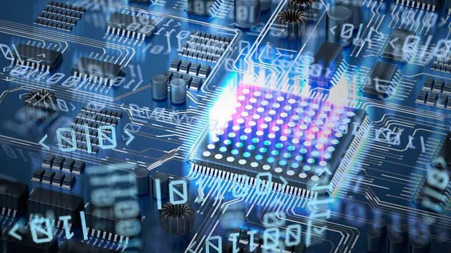

¿Que es computación cuántica?
La computación cuántica es un área de la informática, como anteriormente se ha mencionado, que se rige por los principos de la mecánica cuántica para procesar información de manera diferente a la computación clásica que conocemos. A diferencia de los bits tradicionalees (unidad mínima de información utilizada para utilizada en la informática Y tecnología digital), que pueden ser representado entre 0 y 1, así mismo estos dos valores representan un único estado, como por ejemplo 0 es apagado y 1 es encendido. En la computación cuántica se ven utilizado los qubits, estos pueden existir en múltiples estados simultáneamente. gracias a la superposición y entrelazamiento.
Esto permite que los ordenadores cuánticos realicen cálculos complejos a velocidades exponencialmente mayores que los ordenadores clásicos, abriendo nuevas posibilidades en campos como la criptografía, la simulación de materiales y la optimización de algoritmos. Por ello, es la razón que los ordenadores cuánticos pueden realizar cálculos que resultan muy complejos a grandes velocidades a comparación con los ordenadores clásicos. Este avance nos lleva a nuevas posibilidades a campos muchos más intensos y prometedores como la optimización de algoritmos.
Sin embargo, el desarrollo de la computación cuántica enfrenta varios desafíos para poder lograr que esta se adapte en forma masiva en el mundo, ya que la alta sensibilidad de los qubits con relación a los factores externos está generando errores en los cálculos y operaciones de esta rama. A pesar de estas dificultades, los avances constantes con las correcciones de errores y la creación de procesadores mucho más estables ayudan a que la transición a la computación cuántica en su totalidad cada vez sea más visible.

Usos dados en la actualidad
Hoy en día la computación cuántica es utilizada en diversos campos, en la investigación como plataforma experimental, simulación científicas en una escala pequeña y pruebas de optimización.
Para tenerlo de manera más concreta, se pueden mencionar algunos ejemplos de su aplicación como:
- Simulación de moléculas y materiales: Para el desarrollo de nuevos medicamentos y materiales.
- Optimización de procesos en la industria: Como la logística y la cadena de suministro.
- Criptografía cuántica: Para la seguridad de la información.
Comparación entre computación clásica y cuántica
| Característica | Computación Clásica | Computación Cuántica |
|---|---|---|
| Unidad de información | Bit (0 o 1) | Qubit (superposición de 0 y 1) |
| Velocidad de procesamiento | Lenta para problemas complejos | Exponencialmente más rápida para ciertos problemas |
| Capacidad de procesamiento | Limitada por la arquitectura clásica | Pueden manejar grandes cantidades de datos simultáneamente |
| Aplicaciones | Procesamiento de datos, juegos, aplicaciones web | Simulación cuántica, optimización, criptografía avanzada |
Principios de la computación cuántica
La computación cuántica se basa en principios fundamentales de la mecánica cuántica, como la superposición y el entrelazamiento, la cual la hace diferenciar de la computación clásica.
- Superposición: Los qubits pueden existir en múltiples estados al mismo tiempo, lo que permite realizar cálculos paralelos.
- Entrelazamiento: Los qubits pueden estar correlacionados de manera que el estado de uno afecta al estado del otro, incluso a distancia.
Ventajas y desventajas
La computación cuántica ofrece ventajas significativas en comparación con la computación clásica, pero también presenta desafíos y limitaciones.
Ventajas:
- Velocidad: Esta rama de la informatica nos permite tener ordenadores que realicen cálculos complejos a velocidades exponencialmente mayores que los ordenadores clásicos.
- Capacidad de procesamiento: Pueden manejar grandes cantidades de datos y resolver problemas que son intratables para los ordenadores clásicos, ya que los qubits tiene multiples estados.
- Simulación de sistemas cuánticos: Son ideales para simular fenómenos cuánticos, lo que es útil en la investigación científica.
Desventajas:
- Fragilidad: Los qubits son extremadamente fragiles, por lo que su manipulación requiere condiciones muy controladas.
- Costo: La computación cuántica es muy costosa debido a los requisitos de los qubits y deferentes tipos de materiales fundamentales para su funcionamiento, por lo cual se vuelve demasiado costosa poder fabricar y mantener en optimas condiciones para tener su maxima eficiencia.
- Limitaciones tecnológicas: La tecnología cuántica aún está en desarrollo, y muchos problemas prácticos aún no se han resuelto, ya que aún se encuentran en fase experimental.